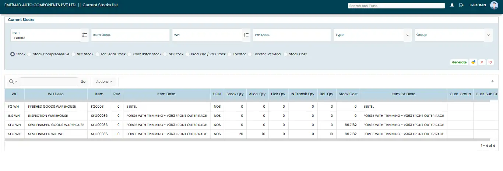
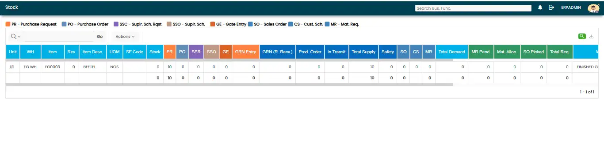

<div data-category="Purchase Order" data-title="Purchase Request Stock Details" data-updated="December 01, 2025" data-contributors="RoadmapIT" data-breadcrumb="Home,Purchase Order,Purchase Request Stock Details">
  <div class="page-content">
    <p>This screen is used to view the stock details of the requested items. Use the View Stk. Button to view the stock details of the purchase item.</p>

    <h5>Navigation path:</h5>
    <p class="fs-6">Supply Chain \ Inventory \ Reports \ Stocks</p>

    

    <ul style="list-style-type: none; align-content: center">
      <li class="mouse-icon">Filter with item and warehouse details and Click OK button to View Stock.</li>
    </ul>

    

    <ul style="list-style-type: none; align-content: center">
      <li class="mouse-icon">Drill down the document to view the Purchase Request Stock details.</li>
    </ul>
  </div>
</div>